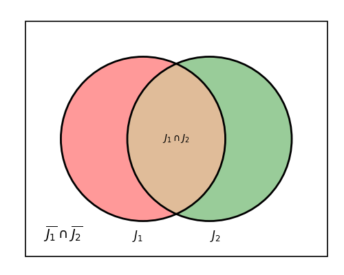

Matemamtikk R1 - økter 2018-19
uke 35
mandag
Til neste gang
Se på utfordringsoppgaven, De to terningene.
Oppklaring oppgave 3.11
- Oppgavetekst
For en tilfeldig valg familie med to barn har vi definert disse hendingene:
- \(A\): ett barn er jente og ett barn er gutt
- \(B\): det eldste barnet er en gutt
- \(C\): minst ett av barna er en gutt
Regn ut \(P(A)\), \(P(B)\), \(P(C)\), \(P(A|B)\) og \(P(A|C)\).
- Mulig løsning
En grei måte å sortere informasjonen på her, er å si at vi har to barn født uavhengig av hverandre, hvor \(J_1\) og \(\overline{J_1}\) er at første barn (eldst) er henholdsvis jente og ikke-jente (gutt), og \(J_2\) og \(\overline{J_2}\) er at andre barn (yngst) er henholdsvis jente og ikke-jente (gutt).
Siden dette bare er to «trinn», kan vi sortere det i en krysstabell (forsøk å gjøre tilsvarende for et tredje barn, og du vil se at krysstabellen raskt mangler dimensjoner):
Barn 2 \ Barn 1 \(J_1\) \(\overline{J_1}\) Totalt \(J_2\) 0.25 0.25 0.50 \(\overline{J_2}\) 0.25 0.25 0.50 Totalt 0.50 0.50 1.0 Alternativt kan vi vise det i et venndiagram som følger:

- \(P(A)\)
- Her er ett barn jente og ett barn gutt. Vi ser fra det over at vi får \[P(A) = P(J_1 \cap \overline{J_2}) + P(\overline{J_1} \cap J_2)\] Dette blir altså at \[P(A) = 0.25 + 0.25 = 0.50\]
- \(P(B)\)
- Her er det eldste barnet ei jente, dette er oppsummert i $J1$-kolonna over. Vi får da at \[P(B) = P(J_1) = 0.5\] Om vi ønsker å utføre oppgaven ved å bruke total sannsynlighet, kan vi uttrykke det som følger: \[P(J_1) = P(J_1|J_2)\cdot P(J_2) + P(J_1| \overline{J_2})\cdot P(\overline{J_2}) = 0.50 \cdot 0.50 + 0.50\cdot 0.50 = 0.50\] …men jeg sier ikke imot deg om du synes dette blir unødvendig komplisert.
- \(P(C)\)
- Her er minst ett av barna gutt. Vi har igjen to muligheter: 1) Legge sammen alle alternativer hvor det er én eller to gutter (\(J_1\cap \overline{J_2}\), \(\overline{J_1} \cap J_2\), \(\overline{J_1} \cap \overline{J_2}\)), eller 2) å bruke at sannsynligheten for minst én gutt er 1 minus sannsynligheten for ingen gutter. Vi får \[P(C)=P(\textrm{minst én gutt}) = 1 - P(\textrm{ingen gutter}) = 1 - P(J_1 \cap J_2) = 1 - 0.25 = 0.75\]
- \(P(A|B)\)
- Denne kan vi løse med \[P(A|B)=\frac{P(A\cap B)}{P(B)}\] Her er \(P(A\cap B) = 0.25\) siden vi kun har én jente og én gutt (\(A\)), og at den eldste er ei jente (\(B\)) når den yngste er en gutt (\(\overline{J_2}\)) og den eldste ei jente (\(J_1\)). Vi får \[P(A|B) = \frac{0.25}{0.50} = 0.50\]
- \(P(A|C)\)
- Her lurer vi altså på sannsynligheten for at ett barn er jente og ett barn er gutt, gitt at minst ett av barna er gutt. En av utregningene vi kan se på er \[P(A|C) = \frac{P(A\cap C)}{P(C)}\] hvor vi allerede kjenner \(P(C)=0.75\). Vi lurer altså på \((P(A\cap C)\) i første omgang. Vi har \(A\cap C\) når ett av barna er jente og ett av barna er gutt og minst ett av barna er gutt kun når ett av barna er jente og ett av barna er gutt. (Vi kan ikke ha flere enn én gutt, og fremdeles ha at ett barn er jente og ett barn er gutt.) Vi får da at \(P(A\cap C) = P(A) = 0.50\). Vi kan da finne \(P(A|C)\) som \[P(A|C)=\frac{P(A)}{P(C)} = \frac{0.50}{0.75}=0.67=67 \%\]
Betinget sannsynlighet
La \(A\) være en hending der \(P(A)>0\). For en annen hending \(B\) er da \[P(B|A)=\frac{P(A\cap B)}{P(A)}.\]
Her leser vi de ulike elementene som følger:
- \(P(B|A)\) – «sannsynligheten for B gitt A»
- \(P(A\cap B)\) – «sannsynligheten for A og B»
- \(P(A)\) – «sannsynligheten for A»
Lag en oppgave som kan løses med bruk av betinget sannsynlighet. La den du sitter ved siden av løse oppgaven din.
Total sannsynlighet
\[P(B) = P(A)\cdot P(B|A) + P(\bar{A})\cdot P(B|\bar{A})\]
Her leser vi det nye elementet som følger:
- \(P(\bar{A})\) – «sannsynligheten for ikke-A»
Finn et eksempel som viser at denne formelen stemmer.
- minimum
- 3.10, 11, 12, 13, 14, 15, 20, 21, 22, 23
- ytterligere
- 3.110, 111, 113, 115, 120, 121, 123, 124, 125, 126, 127, 128
- uten hjelpemidler
- 3.200, 201, 203, 204
- med hjelpemidler
- 3.300, 301, 302, 303, 304
torsdag
Bayes-setningen
Vi kan ut fra det foregående vise følgende definisjon.
\[P(B|A) =\frac{P(B)\cdot P(A|B)}{P(A)}\]
Utled formelen ut fra de to foregående definisjonene.
Uavhengige hendelser
To hendinger \(A\) og \(B\) er uavhengige hvis \(P(A|B)=P(A)\), eller hvis \(P(B|A)=P(B)\).
- minimum
- 3.30, 31, 32, 33, 34, 40, 41, 42, 43, 44, 45, 46
- ytterligere
- 3.130, 131, 132, 133, 140, 142, 143, 144, 145
- uten hjelpemidler
- 3.202 (hopp over denne om du heter Dag), 204
Ordnede utvalg
Uordnede utvalg
uke 34
torsdag
Introdukosjon
- Kun Geogebra som kalkulator
- Årsplan under Årsplan 2018–19
- Oppgaver blir lansert under Oppgaver, hvor de også deles i oppgavetyper
- Ukentlige Kikora-oppgaver